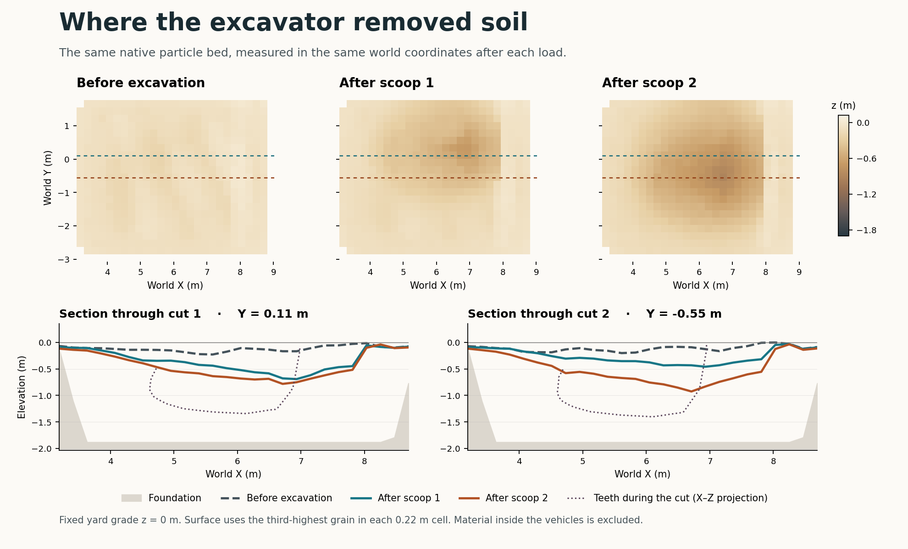

Research preview ·
Moving earth with AMMI
Autonomous Material Moving Intelligence studies how machines can work toward one terrain goal. In this simulated quarry, the job is to fill a pit to road level. Each machine must work on the ground the last one left behind.
How the fleet decides what to do
A mission defines where soil should come from, where it should go, and which machines share a work area. The planner chooses a ready job, such as sending the truck to the pit. The truck controller steers and brakes the loaded vehicle, then reports its arrival. A separate tipping skill raises the bed and measures how much soil reached the pit. The planner uses those measurements to choose the next job.

What can the planner ask?
- Inspect the site
- Check machine positions, payloads and progress. A ground survey shows where the pit surface lies above or below the target.
- Find a ready skill
- See which jobs the fleet can start. The skid steer can wait for the truck to leave their shared approach.
- Run a skill
- Give one machine a job and a time budget. Its controller reports what happened, including an obstruction or a load that missed the receiver.
- Stop
- End dispatch between jobs and record the reason. A machine can also interrupt its own movement when it encounters an obstacle.
Machine control. The quarry film uses supervised local dispatch and feedback controllers. Excavation, hauling and grading run on measured machine and soil state. A failed skill can pause the sequence at a physical boundary for inspection and a retry. In a separate three-machine test, the GPT‑6.2 Sol planner dispatched a truck after the excavator reported 192 kg in its bed. The truck delivered 190 kg and cleared the bay before the skid steer entered.
Robot learning. A separate excavator policy learns to cut, curl and lift using proximal policy optimization (PPO). It observes joint motion and nearby terrain. Fast analytical soil supports repeated training, and particle simulation tests whether the bucket retains material under contact.
The worksite in action
Isaac Lab and Newton simulate the vehicles and layered soil together. The material point method (MPM) follows the soil as it moves and feeds contact forces back to the machines. The excavator and truck supply the first loads. The front loader adds two stockpile loads. The skid steer pushes overflow into the pit in 4 measured scraper strokes. The excavator grades the fill, then makes a separate stockpile pickup to top up a low spot on the western side. A moving visual section exposes the buried layers during the cut. The simulator keeps the entire bed present throughout. The excavator detects 11.6 kN of rigid contact at the utility pipe, stops and withdraws before its second cut. The swing controller uses carriage speed and the remaining angle to brake as the bucket approaches the truck. The two digs, pipe inspection and both transfers to the truck take 92.6 simulated seconds. Soil masses come from simulated material points. Boulders are tracked separately as rigid bodies. The excerpts show selected actions from the same simulation at a slower inspection speed.
Curl below grade and lift
The excavator takes 25.6 and 27.8 simulated seconds to dig and raise its two loads. The raised buckets hold 2,474 and 2,615 kg of soil. At lift, 99.7% and 95.2% of sampled points inside the bucket are within one grain spacing of soil or inside a boulder. Across the two cuts, 3 boulders reach the truck bed.
Open clip · 13 sTip into the receiving pit
The truck tips into the receiving pit. With the bed empty and latched it drives a 6.19 m arc along the hardstand, opening the approach for cleanup. See the measured truck path.
Open clip · 14 s
Empty the stockpile bucket
The loader enters the stockpile, reverses under load and approaches the eastern lip. It brings 1,704 and 1,629 kg to its two tipping positions, releasing 100.0% and 100.0% of the measured payloads. At the tipping checkpoints, 1,571 and 1,313 kg of those loads have settled inside the receiving footprint.
Open clip · 12 sPush the windrows into the pit
The skid steer surveys material around the lip and lowers the cutting edge ahead of a windrow. Across cleanup, the measured mass of tracked soil settled inside the receiving footprint changes by +957 kg.
Open clip · 10 sSweep and level the fill
The excavator sweeps its side of the apron with the bucket angled. During that pass, 52 kg of originally spilled soil enters the receiver, and the net settled gain is 50 kg. It then works across the opening. The central-floor RMS height error measures 26.1 cm after skid-steer cleanup and 7.1 cm at the final settled survey.
Open clip · 13 sThe hole left by the bucket
The borrow bed has a rippled surface and buried layers of sand, gravel and fractured rock. During the two cuts, the lowest bucket steel reaches 1.45 and 1.46 m below road level. On the original 22 cm survey grid the deepest measured lowering after both cuts is 0.83 m. Each column uses the third-highest grain to reduce the influence of airborne particles.



Where the soil settles
The simulation follows 612,993 material points. The receiver opening measures 4.75 × 2.00 m and the flat floor begins 1.38 m below the surrounding pad. The ground survey compares each 25 cm cell with road level. Root-mean-square (RMS) error counts both high and low spots. The full opening includes the sloped edges around the central floor.
- 8.70 t
- Soil from the original truck and loader loads settled in the receiver
- 7.1 cm
- Final central-floor RMS grade error
- 9.8 cm
- Final RMS error across the full opening

The machines
- Tracked excavator
- Cuts and curls a load, swings to the truck, and sweeps loose soil with the side of its bucket.
- Dump truck
- Hauls the excavated loads to the pit, reverses into its tipping position and lowers its bed after discharge. After tipping, the truck follows a 6.19 m clearing route with the bed down.
- Articulated wheel loader
- Steers at the chassis joint, fills its bucket at the stockpile and transports material to the pit.
- Skid steer
- Scrapes narrow strips of spilled soil from the apron and pushes them over the lip of the pit. The route planner checks the swept rear guard as the machine backs toward the concrete divider.
- Grab crane · separate port scene
- Closes a clamshell grab in a ship’s hold, hoists and swings the load, then opens it above a shore hopper.
No code is being released. Updates will follow soon.